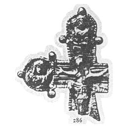

Catalog › CE-0142 · KHA1900-286
Fragment de cruce din „metal oglindă”, cu Răstignirea
XII–XIII в. (1101–1300) · Knjaža Gora (Княжа гора), ținutul Cerkasî, gubernia Kiev, Ucraina · Colecția B. I. și V. N. Khanenko, Kiev, inv. nr. 286 (numerotarea colecției Khanenko)
pectoral cross, altul; XII–XIII в. (1101–1300); found at Knjaža Gora (Княжа гора), ținutul Cerkasî, gubernia Kiev, Ucraina; kept at Colecția B. I. și V. N. Khanenko, Kiev.


Identificare
- Categorie
- Cruce pectorală simplă
- Material
- Altul
- Tehnică
- Turnare în relief
- Stare
- Fragmentară
Iconografie
- Descriere avers
- Fragment de cruce din „metal oglindă”, cu margini rotunjite; în mijloc Mântuitorul răstignit; pe laturi, în medalioane, Maica Domnului și (sus) un sfânt, probabil un arhanghel.
Datare și atribuire
- Datare
- XII–XIII в. (1101–1300)
- Centru
- Necunoscut
Descoperire
- Localitate
- Knjaža Gora (Княжа гора)
- Regiune
- ținutul Cerkasî, gubernia Kiev
- Țară
- Ucraina
- Context
- Necunoscut
- Coordonate
- 49.7373° N, 31.5053° E
- Precizia locului
- Doar localitatea
Păstrare și referințe
- Colecție
- Colecția B. I. și V. N. Khanenko, Kiev
- Nr. inventar
- nr. 286 (numerotarea colecției Khanenko)
- Bibliografie
- B. I. și V. N. Khanenko, Древности русскія. Кресты и образки, вып. II (Собраніе Б. И. и В. Н. Ханенко), Kiev, 1900 [Khanenko 1900], cat. nr. 286, Tabl. XXV, reprodusă la Табл. XXV, fig. 286 (planșa de la p. 30 a PDF-ului).
- Figura
- Табл. XXV, fig. 286
- Planșe
- Khanenko 1900, Табл. XXV (planșă fără paginație tipărită; p. 30 în PDF)
- Observații
- Datare după Khanenko: XII–XIII в. Material numit în sursă „зеркальный металл” (aliaj pentru oglinzi). Coordonate: ale localității (aproximative), nu date în sursă.
Citare: Corpus Encolpiorum, CE-0142, Fragment de cruce din „metal oglindă”, cu Răstignirea, --root/piese/KHA1900-286/ (accesat 2026-10-20).